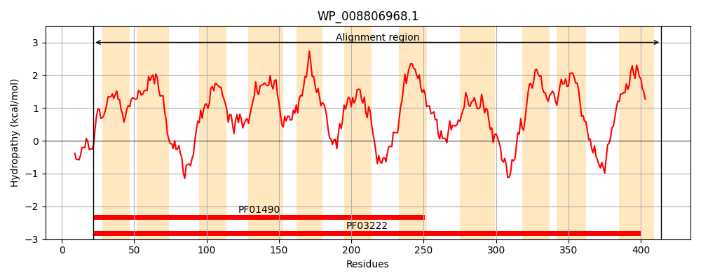
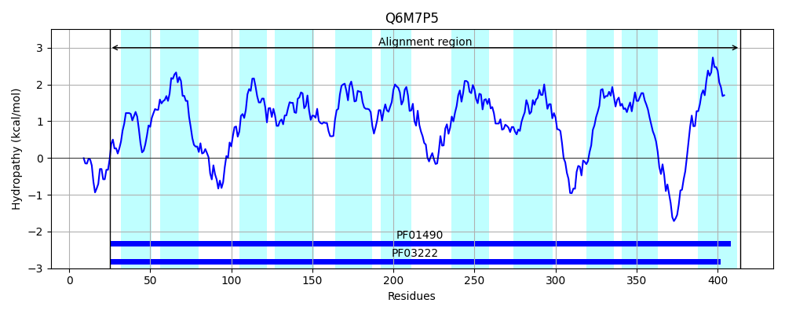
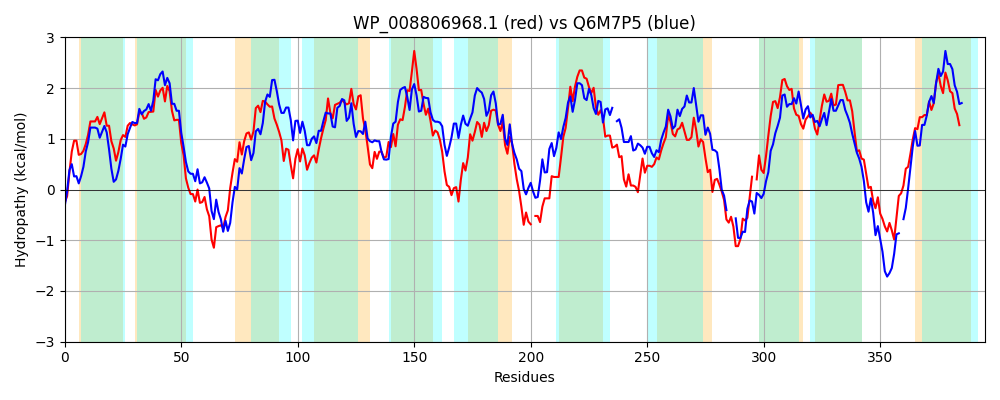

Hit Accession: Q6M7P5
Hit TCID: 2.A.42.1.6
Hit Description: gnl|BL_ORD_ID|14855 gnl|TC-DB|Q6M7P5|2.A.42.1.6 Permease for amino acids and related compounds, fa OS=Corynebacterium glutamicum (strain ATCC 13032 / DSM 20300 / JCM 1318 / LMG 3730 / NCIMB 10025) GN=cg0568 PE=4 SV=1
Mach Len: 395
e:0.000000
Query TMS Count : 11
Hit TMS Count: 11
TMS-Overlap Score: 10.400000
Predicted Substrates:CHEBI:9175;sodium(1+), CHEBI:16865;gamma-aminobutyric acid
BLAST Alignment:
Score: 794 , Bit scores: 310 bits, E-value: 1.2e-102, Alignment length: 395, Percentage identity: 42
Query: 22 KSLSFIEGVSMIVGTNIGAGVLSIAYASSKAGFLPLLFWLVLVGSLTTVTMLYVAESTLRTRKHLQLSGLSKRYVGGFGALMMFLSVCVNSVGALTAYMTGSGKLLHSLFGISPALGSVLFFVPAAGVLYLGLKAIGRGEKFISIGMVVMISVLVIATLLKETTRVGYLLDGNWLYMVPVFNVVAFCFSAQYIVPEMARGF-ADKPEKLPRAIMVGMALTFALLALVPLSVISLNGLDNISDVATISWGRALGEWAFFSANLFALCAMLTSYWGLGGSFLTNIFDQFRLGNDEQPA-RRLMVLLVVAIPPFVLAYSGMVSFVNALYFAGVFSGVILSIMPILMLKGARQRGDLTPGWTCPAWMTHPLIQCFIVLLYLCSAVYAIASAVGYLPAGW 414
K LS +GV++I GTNIGAGVLS+ YA+ GFL L+ L++ G+LTT++MLY+AE +LRT+K LQLSGL+++Y+G +G ++F+++ VNSVGAL AY +GSG L+ +L G+ P +G++ FFV +++ GL E I+ GM +I VL T+L L+ + ++VP+ N+ F F AQY+VPE+ARG P+ +PRAI++GM T LA VP + + L G +S+V TISWG AL A++ AN FAL AM TS+ +G + + N+ D +G+ Q +R + + + +PP ++ +G+ FV AL +AG F+G I+SI+P+L+L+ +R+ GD P W W HP+ Q ++++Y + VY++ + VG +PAGW
Sbjct: 25 KYLSVAQGVALIYGTNIGAGVLSLPYAARNGGFLALVVALLIAGTLTTISMLYIAEVSLRTKKPLQLSGLAEKYLGQWGRWLVFIAIVVNSVGALIAYASGSGILIGNLTGLPPIVGTLGFFVLGTLIMWKGLHTASFVEALITTGMATIIIVLCGWTVLGPGISADNLIVFHPFFIVPIMNLAVFTFLAQYVVPEIARGVNPATPKAVPRAIIIGMVATGVTLAAVPFAALGLLG-TGVSEVVTISWGEALAPVAYYMANAFALLAMFTSFIAIGFTAMRNVLD---IGHWPQHGWQRSVAVGLTVLPPLAISLAGLGGFVAALSYAGGFAGAIMSIIPVLLLRNSRKSGDQEPVWKA-TWQAHPIFQILLIVVYSLAFVYSVLAIVGLMPAGW 414 | Protein Hydropathy Plots: |
|---|
|  |  |
Pairwise Alignment-Hydropathy Plot:
|
|---|
|  |